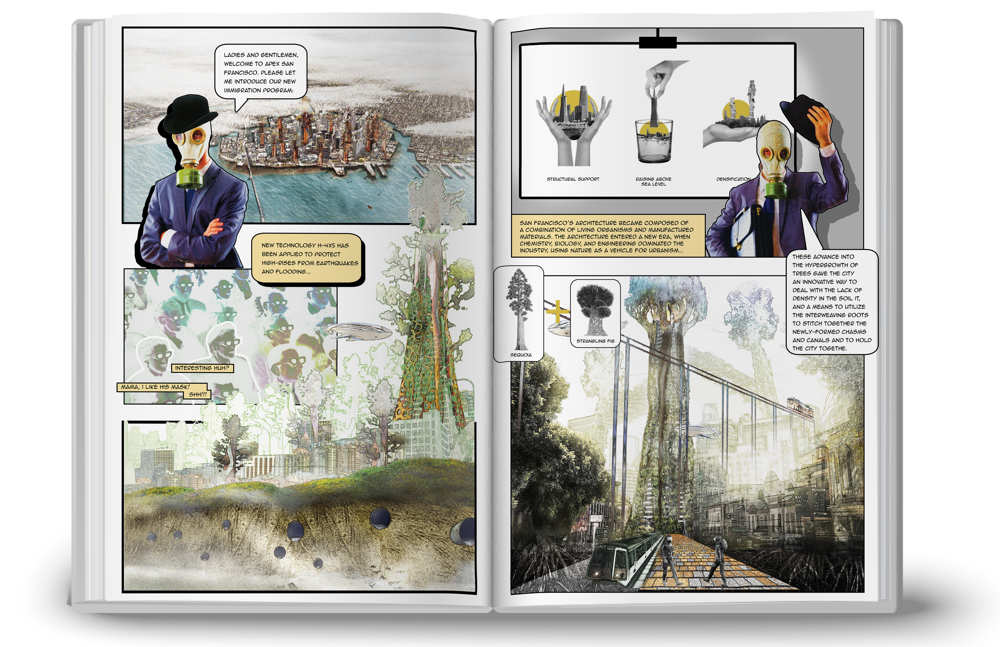
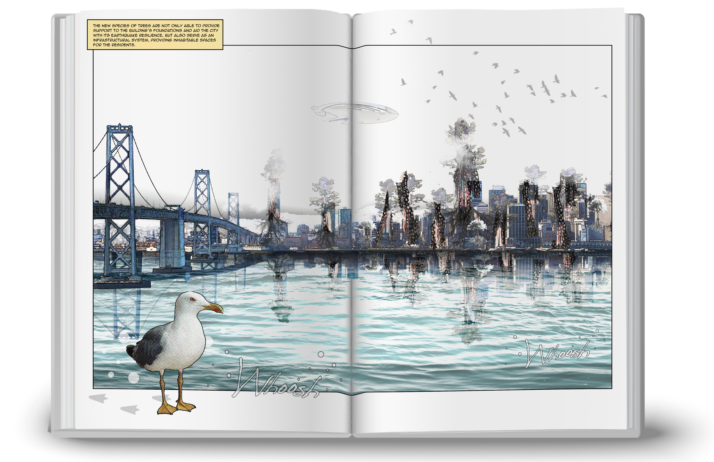
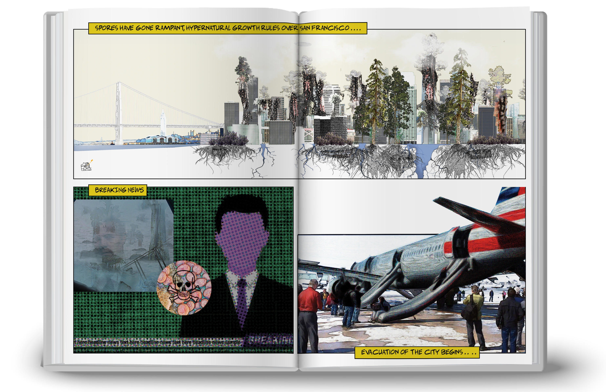
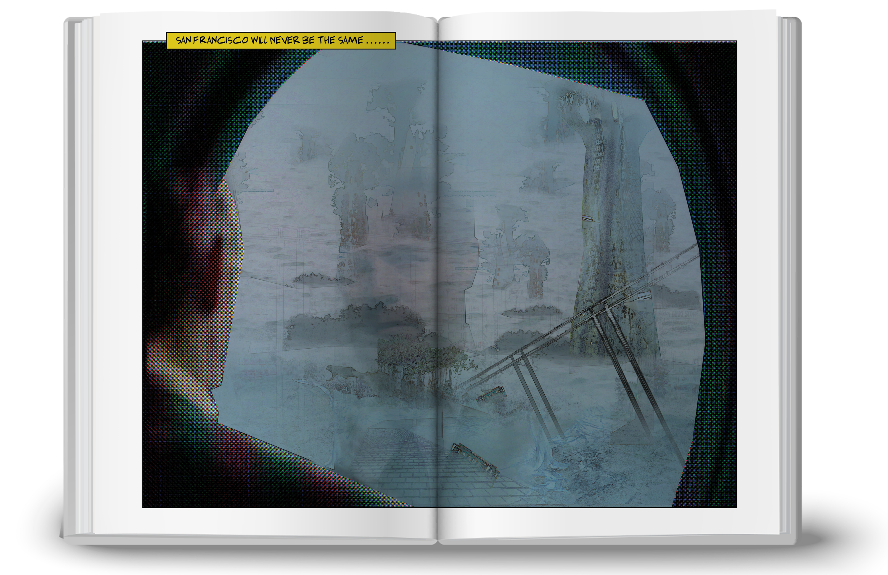
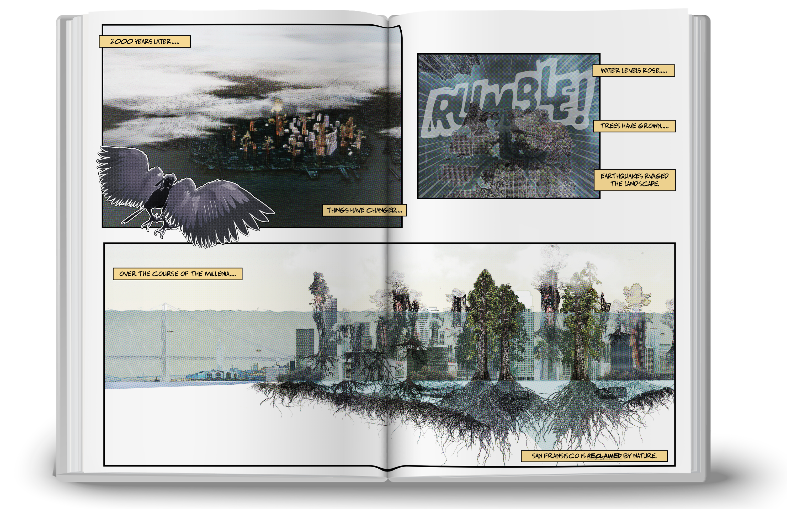
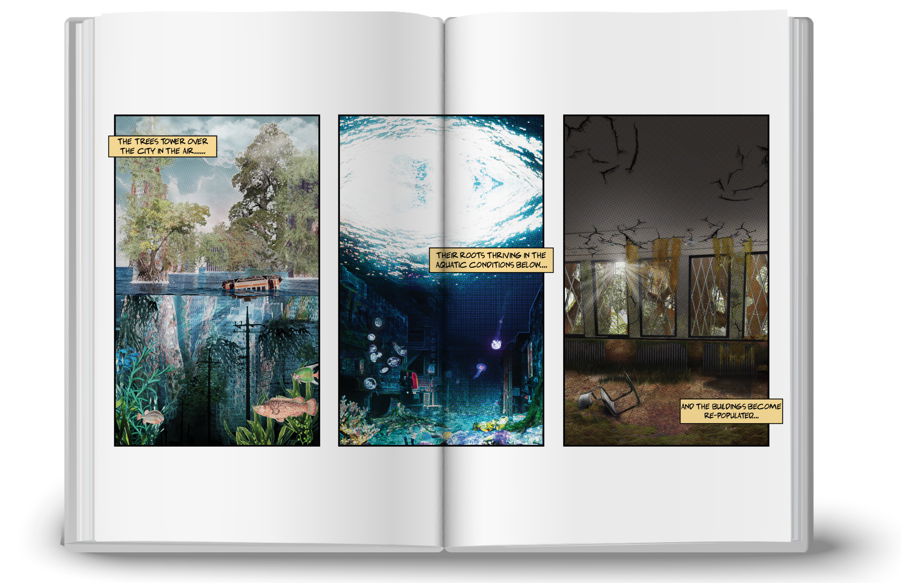
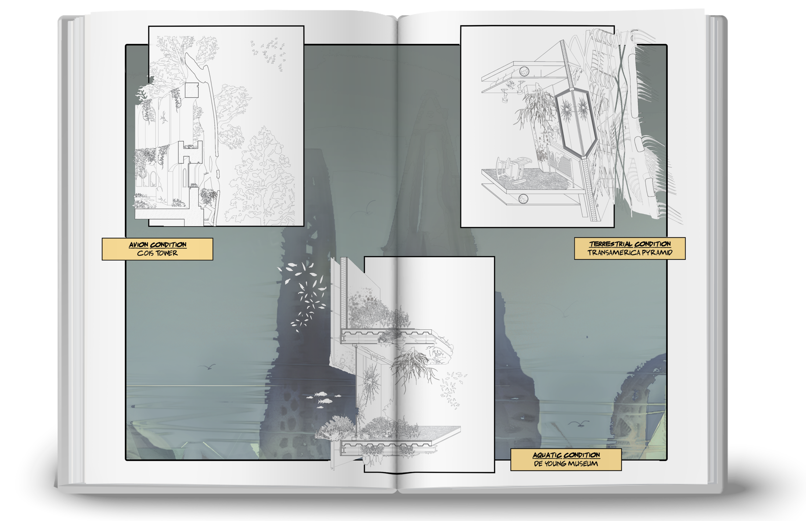

2021
SAN FRANCISCO 2.0
The fall of the Anthropocene
Scientists and biologists develop a new tree species to support the city’s infrastructure—but it backfires.
CONTEXT
ARC 920: Advanced Architecture Studio, Ryerson University
LOCATION
San Francisco
SOFTWARE
3ds Max, Corona Render, Photoshop, Rhinoceros 3D, Illustrator
SUPERVISOR
Vincent Hui
COLLABORATORS
Shengnan Gao, Jiaqi Liu

2200: the apex of human civilization
San Francisco is built on landfill and historic marshland vulnerable to liquefaction. Scientists cross-breed giant sequoias with strangling figs to structurally support, raise, and densify the city. Architecture enters an era where chemistry, biology, and engineering use nature as a vehicle for urbanism.
4200: the post-Anthropocene
Fungi invade the planted city until it becomes unlivable. Earthquake fissures widen, water consumes the coast, and buildings wrapped in hybrid trees become habitats. Marine, terrestrial, and avian ecosystems emerge from urban remnants, reclaiming the city for nature.






